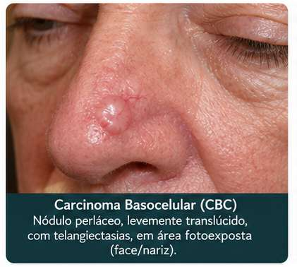
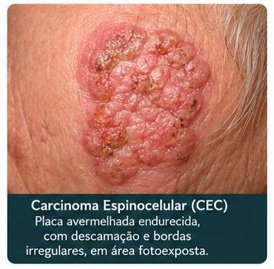
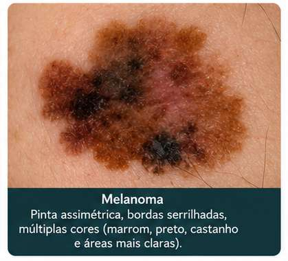
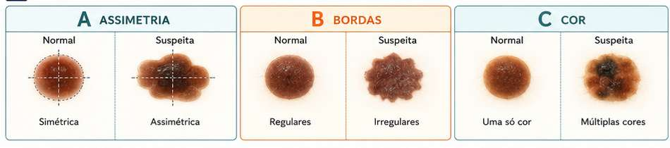
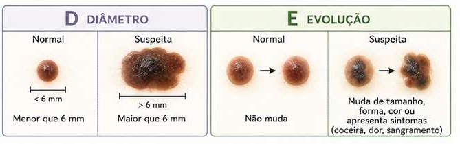
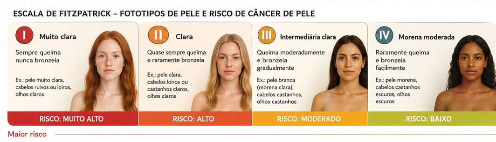
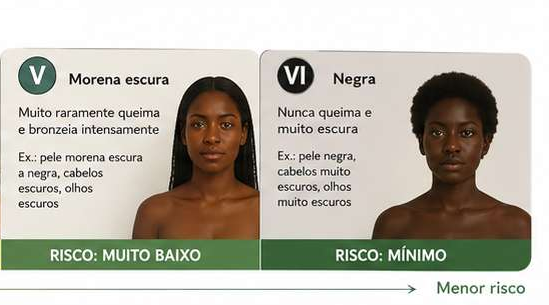

Por que o Brasil lidera?
A combinação de clima tropical, grande extensão territorial, cultura de exposição solar e população miscigenada — com diferentes fototipos — faz do Brasil um dos países com maior incidência de câncer de pele no mundo. [1,2]
- Carcinoma Basocelular — ~80% [4]
- Carcinoma Espinocelular — ~19% [4]
- Melanoma — ~1% [5]
O mais comum de todos os cânceres
Segundo a Estimativa 2026–2028 do INCA, o câncer de pele não melanoma é responsável por 263 mil novos casos por ano — mais de 30% de todos os diagnósticos oncológicos do país. [1]
Apesar da incidência altíssima, os tumores não melanoma têm baixa letalidade quando detectados cedo. Já o melanoma, com apenas 1% dos casos, concentra a maior mortalidade entre os cânceres de pele, devido à sua capacidade de causar metástases. [5]
As regiões Sul e Sudeste concentram a maior parte dos diagnósticos, refletindo maior IDH, maior acesso a diagnóstico e maior exposição acumulada ao sol em populações de pele clara. [1]
Fonte: INCA, Estimativa 2026–2028: Incidência de Câncer no Brasil.
Os três principais tipos
Cada tipo tem origem celular, comportamento clínico e prognóstico distintos. Reconhecê-los é o primeiro passo para o diagnóstico precoce. [4,5]
Carcinoma
Basocelular

Origina-se nas células basais, camada mais profunda da epiderme. Cresce lentamente e raramente se dissemina para outros órgãos (risco de metástase <0,03%). [3]
- Aspecto perláceo, brilhante, pode fazer crosta e sangrar
- Localização preferencial: rosto, orelhas, pescoço e couro cabeludo
- Mais comum em pele clara (fototipos I e II de Fitzpatrick) [4]
- Fator principal: exposição solar crônica acumulada [2]
[3] Sociedade Brasileira de Dermatologia / Hospital Sírio-Libanês, 2026 · [4] SBD/INCA
Carcinoma
Espinocelular

Surge nas células escamosas (camada superficial da epiderme). É mais agressivo que o CBC e tem maior capacidade de se disseminar para linfonodos regionais. [4]
- Lesão avermelhada, endurecida, com bordas elevadas e irregulares
- Ferida que não cicatriza; pode surgir em queratose actínica pré-existente
- Mais comum em homens; frequente em lábios, orelhas e dorso das mãos [4]
- Também pode ocorrer em genitais e mucosas [6]
[4] Felippe RMS et al., Rev Eletr Acervo Med., 2023 · [6] CUF Saúde
Melanoma
Maligno

Origina-se nos melanócitos, células que produzem melanina. Apesar de representar apenas ~1% dos casos, é responsável pela maior parte das mortes por câncer de pele, devido à alta capacidade de metástase. [5]
- Pinta ou mancha enegrecida com bordas irregulares e variação de cor
- Homens: mais frequente no tronco; mulheres: membros inferiores [5]
- Associado a exposição solar intensa e intermitente (queimaduras) [2]
- Pode surgir em áreas sem exposição solar (palmas, plantas, unhas) [5]
[5] Grupo Brasileiro de Melanoma / Ministério da Saúde · [2] IOP Oncologia, 2025
A Regra do ABCDE
Método validado pela Sociedade Brasileira de Dermatologia e pela American Cancer Society para identificar lesões suspeitas de melanoma no autoexame de pele. [7] Não substitui avaliação médica.


[7] Ministério da Saúde / Sociedade Brasileira de Dermatologia. Diagnóstico precoce do melanoma. Disponível em: gov.br/saude. Acesso em: maio 2026.
Quem tem maior risco?
O principal fator de risco é a exposição à radiação ultravioleta (UV), mas outros elementos ampliam a vulnerabilidade. [2,8]
☀️ Exposição Solar
- Exposição cumulativa ao longo da vida → principal causa dos carcinomas (CBC e CEC) [2]
- Exposição intensa e intermitente (queimaduras) → associada ao melanoma [8]
- Queimaduras na infância e adolescência aumentam o risco de melanoma no adulto [8]
- Bronzeamento artificial: risco aumentado de melanoma, especialmente em mulheres jovens [8]
[2] IOP Oncologia, 2025 · [8] Vencer o Câncer, 2025
🧬 Características Individuais
- Fototipos I e II (pele clara, olhos claros, cabelos ruivos ou loiros) — maior sensibilidade ao UV [4]
- Peles morenas e negras têm proteção maior, mas não são imunes ao câncer de pele [9]
- Histórico familiar de câncer de pele ou melanoma [9]
- Grande número de nevos (pintas); doenças de pele pré-existentes (queratose actínica) [7]
- Imunossupressão (transplantados, pacientes com HIV) [6]
[4] Felippe RMS et al., 2023 · [9] Hospital Sírio-Libanês, 2022


Classificação de Fitzpatrick. Referência: Hospital Sírio-Libanês, 2022.
Como prevenir
A maioria dos cânceres de pele é evitável com hábitos simples de fotoproteção. A prevenção começa na infância. [9,10]
Protetor Solar
FPS ≥ 30 diariamente. Reaplicar a cada 2h em exposição prolongada. Fototipos I e II: FPS ≥ 50. [9]
Barreiras Físicas
Chapéu de aba larga, óculos UV, camiseta de malha. Complementam o protetor — não o substituem. [9]
Evitar Horário de Pico
Evitar sol entre 10h e 16h, quando a radiação UV é mais intensa. Fundamental em crianças. [10]
Autoexame Mensal
Inspecionar toda a pele mensalmente. Consultar dermatologista ao menos uma vez por ano. [7]
Doutora em Enfermagem pela UFRGS (2016), Adrize é a coordenadora do projeto de extensão Amor-à-Pele e lidera o Núcleo de Estudos em Práticas de Saúde e Enfermagem (NEPEn) da UFPel, com foco em lesões cutâneas crônicas, práticas integrativas e populações vulneráveis. No PET-Saúde Digital, coordena o telemonitoramento para pessoas com feridas crônicas — iniciativa em que reconhecer quando uma ferida que não cicatriza transcende o diagnóstico habitual é a essência do cuidado qualificado. Editora da Journal of Nursing and Health (JONAH) e colaboradora do grupo Sankofa de pesquisa em saúde das mulheres negras.
Lattes: lattes.cnpq.br/9425000336640831 · ORCID: 0000-0002-5616-1626
Questões de Múltipla Escolha
Teste seus conhecimentos sobre os tipos de câncer de pele, fatores de risco e prevenção. Clique em uma alternativa para ver o gabarito.
Questões para Refletir
Não há resposta única — estas perguntas convidam à análise crítica e à integração do conhecimento com a prática clínica e o contexto social.
Detecção precoce como determinante de cura
O carcinoma basocelular, apesar de ser o câncer mais comum no Brasil, tem taxa de cura próxima a 100% quando diagnosticado precocemente. [3] Por que, então, muitos casos ainda chegam ao sistema de saúde em estágios avançados? Quais barreiras — socioeconômicas, geográficas ou culturais — dificultam o acesso ao diagnóstico precoce nas diferentes regiões do Brasil?
O paradoxo do melanoma: raro, mas mais letal
O melanoma representa apenas ~1% dos casos de câncer de pele, mas é responsável pela maior parte das mortes por esse grupo de doenças. [5] O que esse dado revela sobre a relação entre incidência e mortalidade em oncologia? Como você explicaria essa aparente contradição a um paciente que minimiza o risco por "ser raro"?
Pele negra, risco invisibilizado
Pessoas de pele negra ou morena têm maior proteção natural ao UV devido à melanina, mas não são imunes ao câncer de pele. [9] Além disso, nessa população o diagnóstico tende a ser mais tardio, em parte pela falsa sensação de segurança — tanto do paciente quanto do profissional de saúde. Como combater esse viés na prática clínica e nas estratégias de comunicação em saúde?
Prevenção começa na infância — mas chega tarde?
A exposição solar acumulada ao longo da vida — especialmente queimaduras na infância e adolescência — é um dos principais determinantes do câncer de pele no adulto. [8] Considerando que o Brasil é um país tropical com forte cultura de exposição solar, como o sistema de saúde, a escola e as famílias poderiam atuar de forma integrada para construir hábitos protetores desde a infância?
📚 Referências
- INSTITUTO NACIONAL DE CÂNCER (Brasil). INCA estima 781 mil novos casos de câncer por ano no Brasil entre 2026 e 2028. Rio de Janeiro: INCA, 2026. Disponível em: https://www.gov.br/inca/[...].
- IOP ONCOLOGIA. 95% dos casos de câncer de pele são causados pelo sol. 2025. Disponível em: https://iop.com.br/noticias/[...].
- ESTADO DE MINAS. Lula retira câncer de pele carcinoma basocelular no couro cabeludo; entenda. 23 abr. 2026. Disponível em: https://www.em.com.br/[...].
- FELIPPE, R. M. S. et al. Avaliação global do carcinoma basocelular e espinocelular. Revista Eletrônica Acervo Médico, v. 23, n. 1, e11549, 2023. Disponível em: https://acervomais.com.br/[...].
- GRUPO BRASILEIRO DE MELANOMA. O melanoma. Disponível em: https://gbm.org.br/o-melanoma/.
- CUF. Carcinoma basocelular e espinocelular: do diagnóstico ao tratamento. Disponível em: https://www.cuf.pt/[...].
- BRASIL. Ministério da Saúde. Diagnóstico precoce do câncer de pele. Disponível em: https://www.gov.br/saude/[...].
- VENCER O CÂNCER. Fatores de risco do câncer de pele: melanoma e não melanoma. 2025. Disponível em: https://vencerocancer.org.br/[...].
- HOSPITAL SÍRIO-LIBANÊS. Sol e câncer de pele: mitos e verdades. 2022. Disponível em: https://hospitalsiriolibanes.org.br/[...].
- SKIN CANCER FOUNDATION. Sinais e imagens de alerta de melanoma. Disponível em: https://www.skincancer.org/[...].